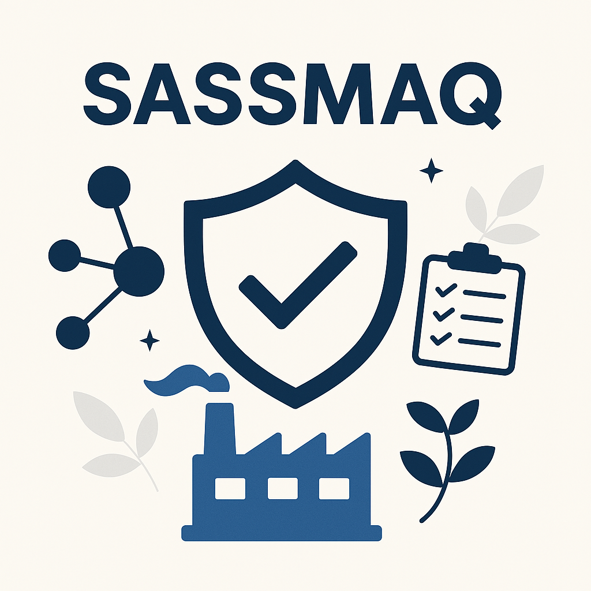

.png)
SASSMAQ: a certificação que fortalece a gestão, a credibilidade e o crescimento do seu negócio
Publicado em 21/01/2026
| Por Ariane Moreira
No setor de logística de produtos químicos, não basta atender requisitos mínimos. É fundamental comprovar, na prática, que a empresa atua com segurança, responsabilidade e excelência operacional. O SASSMAQ (Sistema de Avaliação de Segurança, Saúde, Meio Ambiente e Qualidade) é a principal certificação exigida pela indústria química para qualificar empresas que atuam no transporte, armazenagem e operações logísticas envolvendo produtos químicos.

Desenvolvido pela ABIQUIM, o SASSMAQ avalia a maturidade dos processos, a gestão de riscos e o
atendimento à legislação, tornando-se um fator decisivo para homologação, manutenção de contratos
e competitividade no mercado.
O que é o SASSMAQ?
O SASSMAQ é um sistema de avaliação que verifica se a empresa possui processos estruturados,
controles eficazes e uma cultura organizacional sólida, fundamentada nos pilares de Segurança,
Saúde Ocupacional, Meio Ambiente e Qualidade.
Seu objetivo é garantir que as operações sejam conduzidas de forma segura, sustentável e
responsável, protegendo pessoas, meio ambiente, patrimônio e toda a cadeia logística.
Por que a certificação SASSMAQ é tão importante?
A certificação SASSMAQ vai muito além de atender a uma exigência do mercado. Na prática, ela
impacta diretamente a rotina da empresa, refletindo em processos mais organizados, decisões mais
conscientes e no fortalecimento de uma cultura sólida de segurança, qualidade e responsabilidade.
Ao adotar o SASSMAQ, a empresa passa a atuar de forma mais estruturada, garantindo a conformidade
legal, reduzindo riscos e prevenindo acidentes. A gestão deixa de ser reativa e passa a ser
preventiva, com foco constante na melhoria contínua e na proteção das pessoas, do meio ambiente e
do negócio.
O SASSMAQ como diferencial competitivo
Além dos ganhos internos, a certificação representa um importante diferencial competitivo.
Clientes e parceiros reconhecem o comprometimento da organização com boas práticas de gestão, o
que fortalece a credibilidade, amplia a confiança no relacionamento comercial e abre novas
oportunidades de negócio.
Empresas certificadas no SASSMAQ são vistas como mais confiáveis, organizadas e preparadas para
atender às exigências da indústria química e de grandes embarcadores.
Muito mais do que um selo
Mais do que um certificado, o SASSMAQ se torna uma forma de trabalhar, pensar e conduzir as
operações com responsabilidade, eficiência e sustentabilidade. Ele atua como uma verdadeira
ferramenta de gestão, promovendo:
- Padronização e controle dos processos;
- Cultura forte de segurança e prevenção;
- Melhoria contínua dos indicadores de desempenho;
- Integração com sistemas como ISO 9001, ISO 14001, ISO 45001 e ISO 39001;
- Redução de custos com acidentes, não conformidades e passivos legais.